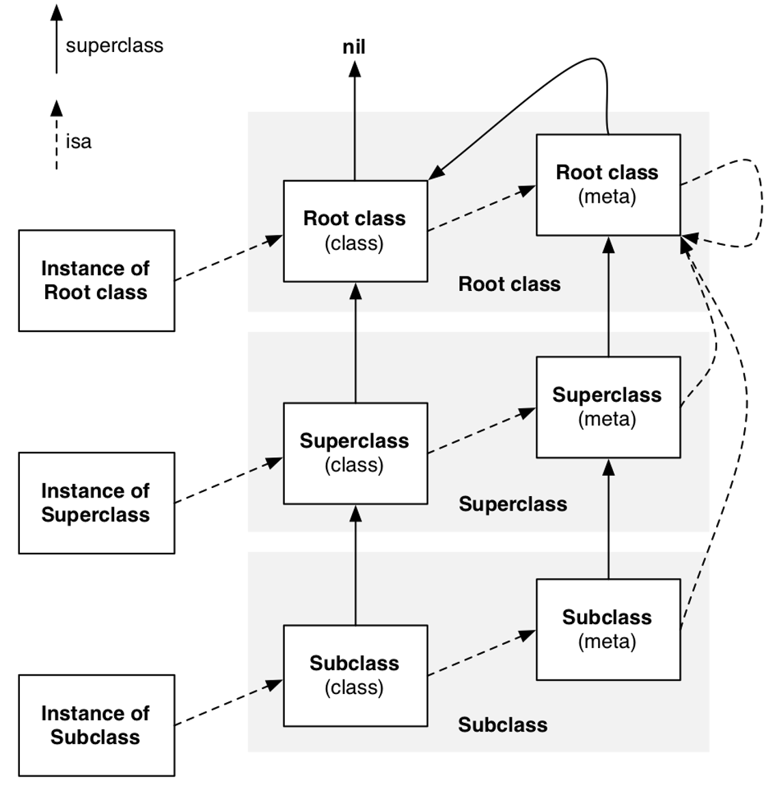

通过这张图描述了实例对象，类，元类之间的关系 ；super_class 指针，虚线是 isa 指针。
当发送一个实例方法的消息时，isa 指针会在这个类的实例方法列表中查找；
当发送一个类方法的消息时，isa 指针会在这个类的 meta-class 的方法列表中查找，meta-class 之所以重要，是因为它存储着一个类的所有类方法。
每个类都会有一个单独的 meta-class，因为每个类的类方法基本不可能完全相同。
NSObject 1 2 3 4 5 6 7 @interface NSObject <NSObject> { #pragma clang diagnostic push #pragma clang diagnostic ignored "-Wobjc-interface-ivars" Class isa OBJC_ISA_AVAILABILITY; #pragma clang diagnostic pop } typedef struct objc_class *Class;
万物皆对象，通过源码分析，NSObject 里面包含一个 objc_class 结构体类型的 isa 指针；
objc_class
通过源码分析：objc_class 里面包含一个 objc_class 结构体类型的 superclass 指针，可以通过 superclass 指针，查找到父类；cache_t 结构体的 cache 指针，cache 主要用于方法性能优化，对使用过的方法进行缓存，便于第二次查找；class_data_bits_t 结构体的 bits 指针，只含有一个 64 位的 bits 用于存储与类有关的信息；
在 objc_class 结构体中的注释写到 class_data_bits_t 相当于 class_rw_t 指针加上 rr/alloc 的标志。
通过将 bits 与 FAST_DATA_MASK 进行位运算，返回 class_rw_t * 指针，其中 Objc 的类的属性、方法、以及遵循的协议都放在 class_rw_t 结构体中；
cache_t 1 2 3 4 5 6 7 8 9 10 11 12 13 14 15 16 17 18 19 20 21 22 23 24 25 26 27 28 29 30 31 32 33 34 35 36 37 38 39 40 struct cache_t { struct bucket_t *_buckets; mask_t _mask; mask_t _occupied; public: struct bucket_t *buckets(); mask_t mask(); mask_t occupied(); void incrementOccupied(); void setBucketsAndMask(struct bucket_t *newBuckets, mask_t newMask); void initializeToEmpty(); mask_t capacity(); bool isConstantEmptyCache(); bool canBeFreed(); static size_t bytesForCapacity(uint32_t cap); static struct bucket_t * endMarker(struct bucket_t *b, uint32_t cap); void expand(); void reallocate(mask_t oldCapacity, mask_t newCapacity); struct bucket_t * find(cache_key_t key, id receiver); static void bad_cache(id receiver, SEL sel, Class isa) __attribute__((noreturn)); }; struct bucket_t { private: cache_key_t _key; IMP _imp; public: inline cache_key_t key() const { return _key; } inline IMP imp() const { return (IMP)_imp; } inline void setKey(cache_key_t newKey) { _key = newKey; } inline void setImp(IMP newImp) { _imp = newImp; } void set(cache_key_t newKey, IMP newImp); };
cache 主要是为了优化方法调用的性能，一个接收者对象接收到一个消息时，它会根据 isa 指针去查找能够响应这个消息的对象。在实际使用中，这个对象只有一部分方法是常用的，很多方法其实很少用或者根本用不上。这种情况下，如果每次消息来时，我们都是 methodLists 中遍历一遍，性能势必很差。这时，cache 就派上用场了。在我们每次调用过一个方法后，这个方法就会被缓存到 cache 列表中，下次调用的时候就会优先去 cache 中查找，才去 methodLists 中查找方法。
从源码中可以看出，_buckets 指针是一个指向 bucket_t 结构体的哈希表，_buckets 哈希表里面包含多个 bucket_t，每个 bucket_t 里面存放着 SEL 和 imp 函数的内存地址的对应关系；_mask 是一个 uint32_t 的指针，表示整个 _buckets 哈希表的长度；_occupied 也是一个 uint32_t 的指针，在 _buckets 哈希表中已经缓存的方法数量；
在 bucket_t 结构体中，_key 是一个 unsigned long 的指针，其实是一个被 hash 化的一串数值，就是方法的 sel，也就是方法名；_imp 指针保持着对应的函数地址；
cache_t 如何缓存 sel 1 2 3 4 5 6 7 8 9 10 11 12 13 14 15 16 17 18 19 20 21 22 23 24 25 26 27 28 29 30 31 32 33 34 35 36 37 38 39 40 41 42 43 44 45 46 47 48 49 50 51 52 53 54 55 56 57 58 59 60 61 62 63 64 65 66 67 68 69 70 71 72 73 74 75 76 77 78 79 void cache_fill(Class cls, SEL sel, IMP imp, id receiver) { cache_fill_nolock(cls, sel, imp, receiver); } static void cache_fill_nolock(Class cls, SEL sel, IMP imp, id receiver) { // Never cache before +initialize is done // 系统要求在类初始化完成之前，不能进行方法返回，因此如果类没有完成初始化就 return if (!cls->isInitialized()) return; // Make sure the entry wasn't added to the cache by some other thread // before we grabbed the cacheUpdateLock. // 因为有可能其他线程已经把该方法缓存起来，如果缓存中已经缓存过了，不用再缓存，直接 return if (cache_getImp(cls, sel)) return; cache_t *cache = getCache(cls); cache_key_t key = getKey(sel); // Use the cache as-is if it is less than 3/4 full mask_t newOccupied = cache->occupied() + 1; mask_t capacity = cache->capacity(); if (cache->isConstantEmptyCache()) { // Cache is read-only. Replace it. cache->reallocate(capacity, capacity ?: INIT_CACHE_SIZE); } else if (newOccupied <= capacity / 4 * 3) { // Cache is less than 3/4 full. Use it as-is. } else { // Cache is too full. Expand it. cache->expand(); } // Scan for the first unused slot and insert there. // There is guaranteed to be an empty slot because the // minimum size is 4 and we resized at 3/4 full. bucket_t *bucket = cache->find(key, receiver); if (bucket->key() == 0) cache->incrementOccupied(); bucket->set(key, imp); } void cache_t::expand() { cacheUpdateLock.assertLocked(); uint32_t oldCapacity = capacity(); uint32_t newCapacity = oldCapacity ? oldCapacity*2 : INIT_CACHE_SIZE; if ((uint32_t)(mask_t)newCapacity != newCapacity) { // mask overflow - can't grow further // fixme this wastes one bit of mask newCapacity = oldCapacity; } reallocate(oldCapacity, newCapacity); } void cache_t::reallocate(mask_t oldCapacity, mask_t newCapacity) { bool freeOld = canBeFreed(); bucket_t *oldBuckets = buckets(); bucket_t *newBuckets = allocateBuckets(newCapacity); // Cache's old contents are not propagated. // This is thought to save cache memory at the cost of extra cache fills. // fixme re-measure this assert(newCapacity > 0); assert((uintptr_t)(mask_t)(newCapacity-1) == newCapacity-1); setBucketsAndMask(newBuckets, newCapacity - 1); if (freeOld) { cache_collect_free(oldBuckets, oldCapacity); cache_collect(false); } }
先看缓存中是否已经存在了该方法，如果已经存在，直接return掉；
如果缓存是只读的，则需要重新申请缓存空间；
如果存入缓存后的大小小于当前大小的 3/4，则当前缓存大小还可以使用，无需扩容；
如果缓存太满，需要扩容，扩容为原来大小的 2 倍，重新申请缓存空间；1 2 3 4 enum { INIT_CACHE_SIZE_LOG2 = 2, INIT_CACHE_SIZE = (1 << INIT_CACHE_SIZE_LOG2) };
INIT_CACHE_SIZE 来设定缓存容量；从 INIT_CACHE_SIZE 的定义显示它的值是 4，也就是说苹果给 cache_t 设定的初始容量是 4。
重新设置哈希表的长度 _mask = newCapacity-1，然后将旧内存释放掉，清空缓存；
当通过 find() 方法返回的 bucket->key() == 0，就说明该位置上是空的，没有缓存过方法，因此可以进行插入操作 bucket->set(key, imp)，也就是将方法缓存到这个位置上。
注意：传入 cls 得到缓存列表，如果是 instance 对象，返回 class 对象；如果是 class 对象，返回 meta-class 对象；如果是 meta-class 对象，返回 NSObject 的 meta-class 对象；
cache_t 如何查找 sel 1 2 3 4 5 6 7 8 9 10 11 12 13 14 15 16 17 18 19 20 21 22 23 24 25 26 27 28 29 30 bucket_t * cache_t::find(cache_key_t k, id receiver) { assert(k != 0); bucket_t *b = buckets(); mask_t m = mask(); // 通过 cache_hash() 计算出 key 值 k 对应的 index 值 begin，用来记录查询起始索引； mask_t begin = cache_hash(k, m); // begin 赋值给 i，用于切换索引 mask_t i = begin; do { // 用这个 i 从哈希表取值，如果取出来的 bucket_t 的 key = k，则查询成功，返回该 bucket_t。 // 如果 key = 0，说明在索引 i 的位置上还没有缓存过方法，同样需要返回该 bucket_t，用于中止缓存查询。 if (b[i].key() == 0 || b[i].key() == k) { return &b[i]; } } while ((i = cache_next(i, m)) != begin); // hack Class cls = (Class)((uintptr_t)this - offsetof(objc_class, cache)); cache_t::bad_cache(receiver, (SEL)k, cls); } static inline mask_t cache_next(mask_t i, mask_t mask) { return (i+1) & mask; } static inline mask_t cache_next(mask_t i, mask_t mask) { return i ? i-1 : mask; }
cache_t 如何查找 sel，本质上就是根据 key 如何查找 index 的过程；key 计算出 index 值的这个算法称作哈希算法，尽可能减少不同的 key 得出相同 index 的情况出现，这种情况被称作哈希碰撞，同时还要保证得出的 index 值在合理的范围。index 越大，意味着对应的哈希表的长度越长，这是需要占用实际物理空间的，而内存是有限的。哈希表是一种通过牺牲一定空间，来换取时间效率的设计思想。
SEL objc_msgSend函数第二个参数类型为SEL，它是selector在Objc中的表示类型（Swift中是Selector类）。selector是方法选择器，可以理解为区分方法的id，而这个id的数据结构是SEL，即表示一个方法的selector的指针。
方法的selector用于表示运行时方法的名字，Objective-C在编译时，会依据每一个方法的名字、参数序列，生成一个唯一的整型标识(int类型的地址)，这个标识就是SEL。
在Objective-C中，只要方法名相同，那么方法的SEL就是一样的，每一个方法都对应着一个SEL，所以在Objective-C中，同一个类中或者这个类的继承体系中，不能存在2个同名的方法，不同的类可以拥有相同的selector，不同的类的实例对象执行相同的selector，会在各自的方法列表中根据selector去寻找对应的IMP。
在本质上，SEL只是一个指向方法的指针（被hash化得KEY值），能提高方法的查询速度。
IMP IMP实际上是一个函数指针，指向方法实现的首地址。其定义如下：
第一个参数是指向 self 的指针(如果是实例方法，则是类实例的内存地址；如果是类方法，则是指向元类的指针)，第二个参数是方法选择器( selector )，接下来是方法的实际参数列表。
SEL就是为了查找方法的最终实现IMP的，由于每个方法对应唯一的SEL，因此我们可以通过SEL方便快速准确地获得它所对应的IMP。
Method Method是一种代表类中的某个方法的类型。
而objc_method在上面的方法列表中提到过，它存储了方法名，方法类型和方法实现：
注意：
方法名类型为SEL，前面提到过相同名字的方法即使在不同类中定义，它们的方法选择器也相同。
方法类型method_types是个char指针，其实存储着方法的参数类型和返回值类型。
method_imp指向了方法的实现，本质上是一个函数指针。
Ivar Ivar是一种代表类中实例变量的类型。
参考资料https://www.infoq.cn/article/deep-understanding-of-tagged-pointer/ https://draveness.me/isa